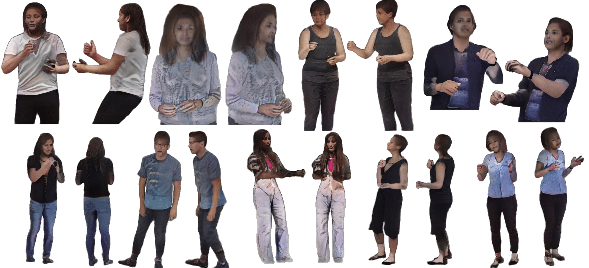
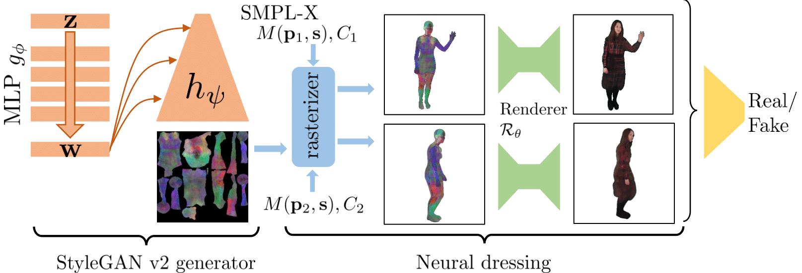

Code
This project consists of two parts. The first part, named Neural Textures shows textures optimized over a video of single person via backpropogation. The second one, StylePeole presents a generative model able to sample random neural textures as well as optimize latent code in one-shot or few-shot mode.


Abstract
We propose a new type of full-body human avatars, which combines parametric mesh-based body model with a neural texture. We show that with the help of neural textures, such avatars can successfully model clothing and hair, which usually poses a problem for mesh-based approaches. We also show how these avatars can be created from multiple frames of a video using backpropagation. We then propose a generative model for such avatars that can be trained from datasets of images and videos of people. The generative model allows us to sample random avatars as well as to create dressed avatars of people from one or few images.

Data
For this project we used two novel dataset: TEDXPeople. You may find the link to the dataset page below:
Video